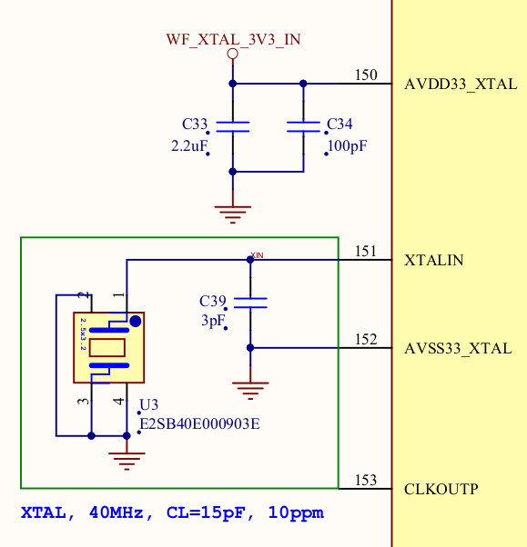

Steward
分享是一種喜悅、更是一種幸福
微處理器 - MediaTek MT7688 (LinkIt Smart 7688 Duo) - Assembly - CPU Clock
MT7688支援25MHz、40MHz兩種XTAL

目前MT7688 Duo板子使用40MHz

CPU設定表格如下：
| CPU最高頻率 | XTAL | Register設定 |
|---|---|---|
| 580MHz | 40MHz |
XTAL_FREQ_SEL = 1 DIS_BBP_SLEEP = 0 EN_BBP_CLK = 0 CPU_FRM_BBP = 0 CPU_FRM_XTAL = 0 |
| 575MHz | 25MHz |
XTAL_FREQ_SEL = 0 DIS_BBP_SLEEP = 0 EN_BBP_CLK = 0 CPU_FRM_BBP = 0 CPU_FRM_XTAL = 0 |
| 480MHz | 40MHz |
XTAL_FREQ_SEL = 1 DIS_BBP_SLEEP = 1 EN_BBP_CLK = 1 CPU_FRM_BBP = 1 CPU_FRM_XTAL = 0 |
| 480MHz | 25MHz |
XTAL_FREQ_SEL = 0 DIS_BBP_SLEEP = 1 EN_BBP_CLK = 1 CPU_FRM_BBP = 1 CPU_FRM_XTAL = 0 |
| 40MHz | 40MHz |
XTAL_FREQ_SEL = 1 DIS_BBP_SLEEP = 0 EN_BBP_CLK = 0 CPU_FRM_BBP = 0 CPU_FRM_XTAL = 1 |
| 25MHz | 25MHz |
XTAL_FREQ_SEL = 0 DIS_BBP_SLEEP = 0 EN_BBP_CLK = 0 CPU_FRM_BBP = 0 CPU_FRM_XTAL = 1 |
XTAL_FREQ_SEL設定外接的晶振頻率

CPU_FRM_XTAL、CPU_FRM_BBP設定CPU頻率來源


CPU_FDIV、CPU_FFRAC用來設定除頻係數

公式如下：
CPU frequency = PLL_FREQ * (CPU_FFRAC / CPU_FDIV)
範例：
XTAL_FREQ_SEL = 1
DIS_BBP_SLEEP = 0
EN_BBP_CLK = 0
CPU_FRM_BBP = 0
CPU_FRM_XTAL = 0
PLL_FREQ = 580MHz
CPU_FFRAC = 1
CPU_FDIV = 10
CPU頻率 = 580MHz * (1 / 10) = 58MHz
main.s
.extern _start
.set noreorder
.equiv SYSCFG0, 0xb0000010
.equiv DYN_CFG0, 0xb0000440
.equiv GPIO_CTRL_1, 0xb0000604
.equiv GPIO_DATA_1, 0xb0000624
.equiv LED, (44 - 32)
.text
_start:
b reset
.org 0x400
reset:
mfc0 $10, $16
and $10, 0xfffffff8
ori $10, 0x00000003
mtc0 $10, $16
li $8, SYSCFG0
lw $9, 0($8)
or $9, (1 << 6)
sw $9, 0($8)
li $8, DYN_CFG0
li $9, 0x00030101
sw $9, 0($8)
li $8, GPIO_CTRL_1
li $9, (1 << LED)
sw $9, 0($8)
loop:
li $8, GPIO_DATA_1
xori $9, $10, (1 << LED)
move $10, $9
sw $9, 0($8)
li $8, 500000
0:
addi $8, $8, -1
bnez $8, 0b
nop
b loop
nop
P.S. CPU頻率 = 580MHz * (1 / 1) = 580MHz，目前不知為何MT7688需要開啟CP0 KSeg0的Cacheable，才可以讓CPU速度上來，這部份是參考U-Boot程式碼
完成